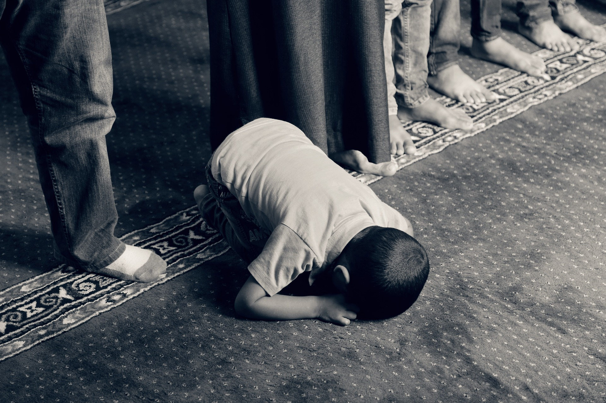

Waktu Mustajab untuk Berdoa bagi Umat Muslim
Some quick example text to build on the card title and make up the bulk of the card's content.
Baca MateriMengapa kita harus berpuasa dibulan ramadhan
Some quick example text to build on the card title and make up the bulk of the card's content.
Baca MateriKeutamaan membaca Al-Qur'an di bulan ramadhan
Some quick example text to build on the card title and make up the bulk of the card's content.
Baca MateriCara agar puasa tidak menjadi beban
Some quick example text to build on the card title and make up the bulk of the card's content.
Baca Materi
Hal-hal yang membatalkan puasa
Some quick example text to build on the card title and make up the bulk of the card's content.
Baca MateriKumpulan doa harian selama bulan ramadhan
Some quick example text to build on the card title and make up the bulk of the card's content.
Baca Materi